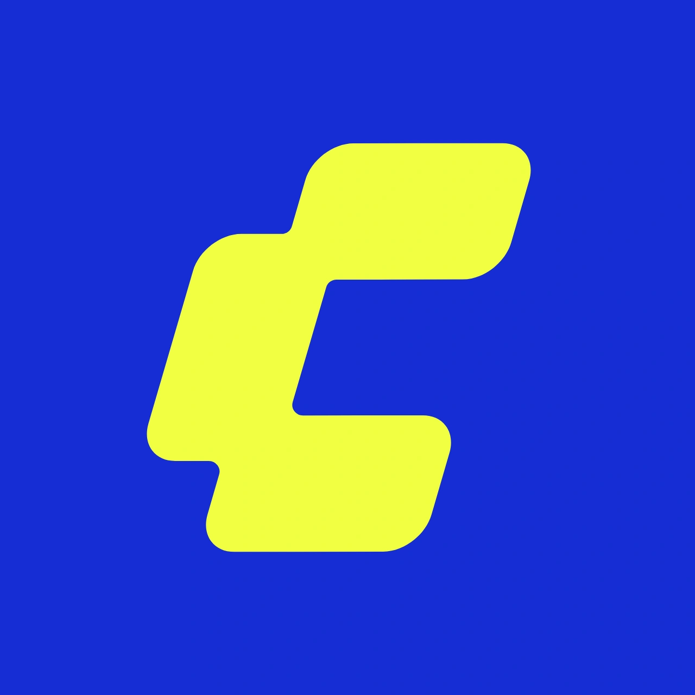

SEC.01
AI增效工作流
01
定义目标
价值验证 · 用户分析 · 定义指标
02
路径规划
选择技术路径 · 评估成本与性能
03
工具选择
LLM · Agent · Tool
04
人机协同
协同构建执行标准
05
效用评估
技术 · 用户体验 · 业务KPI












价值验证 · 用户分析 · 定义指标
选择技术路径 · 评估成本与性能
LLM · Agent · Tool
协同构建执行标准
技术 · 用户体验 · 业务KPI






 UGC / AIGC
UGC / AIGC AI 提效
AI 提效 AI 提效
AI 提效 游戏制作
游戏制作 AI + 游戏
AI + 游戏 虚拟现实
虚拟现实 游戏交易
游戏交易 PC 平台
PC 平台 移动 APP
移动 APP通常 24 小时内回复。对有趣的项目总是保持开放。